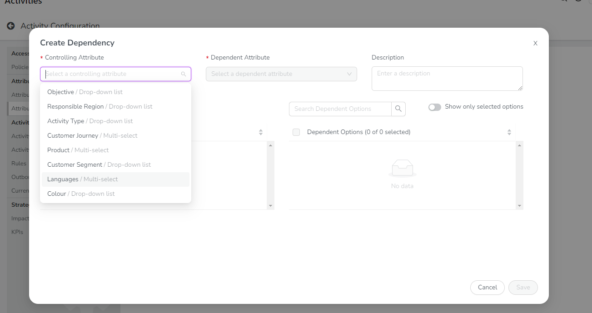
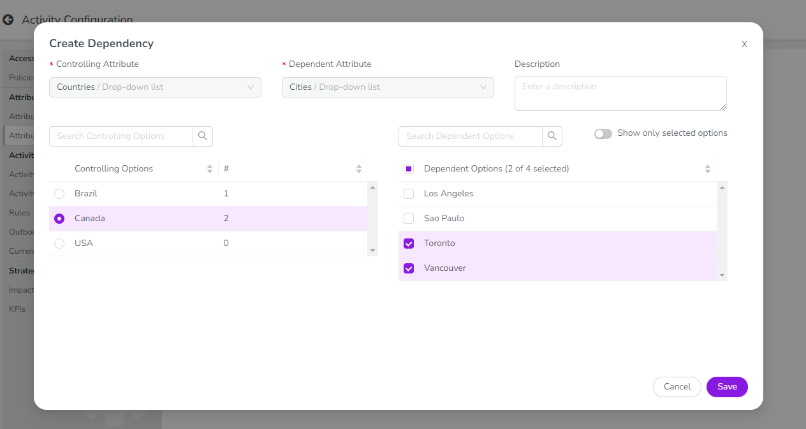

Set up attribute dependencies
If two Drop-Down List or Multi-Select List attributes are logically related, you can create an attribute dependency to make the selected option in one attribute control the available options for the other attribute.
How attribute dependencies work
In an attribute dependency, the value selected for the first attribute (the controlling attribute) determines which values can be selected in the second attribute (the dependent attribute). The controlling attribute's value acts as a filter for the dependent attribute: after you select a value for the controlling attribute, the dependent attribute only displays list options that are valid for the controlling attribute's value (and hides those that are not valid).
Attribute dependencies help to protect the integrity of your data by ensuring that users select valid value combinations. They are also useful for attributes that have a very large number of values: dependencies make it much easier for users to select a value, because they limit the number of options that are displayed.
- Example
A common use case for attribute dependencies is for attributes that have hierarchical relationships: for example, geographic categories like State and City. Since City is a subcategory of State, only certain options for City are valid based on the option set for State: if State is set to California, setting City to Miami would not be valid.
If you set up an attribute dependency in which State is the controlling attribute and City is the dependent attribute, users would not be able to select Miami when the State attribute is already set to California. Instead, the City attribute would only display options for cities that are actually located in the selected state (such as Los Angeles, San Francisco, etc.).
Required dependent attributes
Dependencies are active on any activity type where both the controlling attribute and the dependent attribute are present. If the dependent attribute is set as required for that activity type, then it will also be required within the attribute dependency on that activity type.
When a dependent attribute is set as required, it is only conditionally required. This means that it is only required when its controlling attribute is set to an option that makes it relevant.
If the controlling attribute is set to an option that does not have valid options in the dependent attribute, then the dependent attribute is not required in this situation (and is not displayed, see Auto-hide attribute values). This ensures that you don't have to select a value for an attribute when it isn't relevant, but don't miss an attribute when it is needed.
- Example
In this example, the State attribute is a dependent of the Promotion Type attribute:
If the Promotion Type is set to Samples, the State attribute is not relevant, so it's not required in this case (and not displayed):

If the Promotion Type is set to Coupon, the State attribute becomes relevant, so it is now conditionally required (and marked as required accordingly):

Chained dependencies
Each attribute dependency consists of two linked attributes. You can "chain" multiple dependencies together to create a multi-attribute sequence of dependencies. For example, you can chain a Country-State dependency with a State-City dependency to create a three-attribute Country-State-City dependency.
In chained dependencies, the options available for each attribute in the sequence are determined by the selection made in the preceding attribute, starting with the first controlling attribute in the chain. For example, the selected option for Country determines the options available for State, and the selected option for State in turn determines the options available for City.
Create attribute dependencies
You can create an attribute dependency between two attributes that meet the following requirements:
Only List-Type attributes: Both attributes must have the attribute type Drop-Down List or Multi-Select List.
Attributes must exist on the same activity type: You can only set an attribute as the dependent attribute if it is used on at least one activity type where the controlling attribute is also used. It's not possible to create a dependency across activity levels, so you can't set an attribute on a parent activity to control a dependent attribute on a child activity (or vice versa).
Create a new attribute dependency
In the
 Activities section, click
Activities section, click  Settings:
Settings: 
On the Activity Configuration page, click Attributes > Attribute Dependencies.
Click Create Dependency to open the Create Dependency dialog.
Use the Controlling Attribute list to select the attribute whose value controls the available selections in the second (dependent) attribute. The selected attribute's list options are shown in the Controlling Options table, and the Dependent Attribute list activates.
You can type into the Controlling Attribute list field to search for attributes by keyword.

Use the Dependent Attribute list to select the attribute whose available selections are controlled by the first (controlling) attribute. The selected attribute's list options are shown in the Dependent Options table.
In the Controlling Options table, click a list option to select it. The selected controlling list option is highlighted.
In the Dependent Options table, click on a list option to select it and set it as valid for the selected controlling list option:

The dependent list options you select here determine which list options are shown to users in the dependent attribute field when the specified controlling list option is selected.
You can select one, multiple, all, or no dependent list options for any controlling list option.
It is not mandatory to select dependent list options for every controlling list option. If no dependent list options are selected for a controlling list option, users who choose that controlling list option will not be able to set any value for the dependent attribute.
For long option lists, use the Search Dependent Options box to search for dependent list options by keyword. To only view dependent list options you have already selected, turn on the Show only selected options setting.
Repeat steps 6 and 7 for each controlling list option for which you want to select dependent list options. In the Controlling Options table, the # column displays the number of currently selected dependent list options for each controlling list option.
Optional: Enter a brief description of the attribute dependency into the Description field. This description text is shown in the Attribute Dependencies table (Settings > Attributes > Attribute Dependencies).
To finish creating the new attribute dependency, click Save, then click Save Changes.
{kind=link}
Your new attribute dependency is displayed in the Attribute Dependencies table, which also shows the number of activity types that use the new attribute dependency under the # Activity Types column.
Edit attribute dependencies
After an attribute dependency has been created, you can edit it at any time to modify the dependent list options that are selected for each controlling list option.
Edit dependent attribute list options
In the
Activities section, click Settings: On the Activity Configuration page, click Attributes > Attribute Dependencies.
In the Attribute Dependencies table, find the attribute dependency you want to edit and click
 Edit. The Dependency Editor dialog opens.
Edit. The Dependency Editor dialog opens.Make changes to the dependent list options as needed.
Optional: If needed you can also change the text in the Description field.
For detailed instructions on how to configure dependent list options, see Configure attribute list options.
To finish editing the attribute dependency, click Save, then click Save Changes.
The Dependency Editor dialog closes, and you are returned to the Attribute Dependencies table. Your changes take effect immediately.
Delete attribute dependencies
If an attribute dependency is no longer needed, you can delete it at any time. When you delete an attribute dependency, this does not affect the actual values set in the controlling and dependent attributes on activities, and these values will remain unchanged.
Delete an attribute dependency
In the
Activities section, click Settings: On the Activity Configuration page, click Attributes > Attribute Dependencies.
In the Attribute Dependencies table, find the attribute dependency you want to edit and click
 Delete.
Delete.In the confirmation dialog, click Delete to finish deleting the attribute dependency.
The attribute dependency is removed from the Attribute Dependencies table, and a success message is displayed to confirm that the dependency was deleted.
Attribute dependency user experience
Attribute dependencies are useful for complex activity types that have a large number of attributes, but where not all attributes are relevant in every situation. Attribute dependencies are designed with several features to streamline the user experience when working with these types of activities:
Fields appear only when relevant: Dependent attributes stay hidden until triggered by a specific selection. This minimizes cognitive load for users, and speeds up the process of creating an activity.
Reduced manual selections: When a dependent attribute has only one valid option, the form auto-selects it, eliminating unnecessary manual inputs.
No irrelevant “N/A” selections: Dependent attributes can be conditionally required, so they're mandatory only when relevant. This means users don't have to spend time selecting “N/A” for irrelevant fields, while ensuring that critical data is collected when it matters.
Grouped dependent attribute controls
When attributes are part of a dependency, the user experience of selecting values for these attributes is different to standard attributes:
When you create or edit an activity of a type that has one or more attribute dependencies, all the fields for attributes that are part of a dependency are grouped into their own separate section in the list of attributes:

Within the attribute dependencies section, the links between attribute dependencies (and chains of dependencies) are visually represented:

When you select a value for any attribute in the dependencies section, it is not automatically saved. Instead, you must click Save to manually save the selected values. This helps to ensure that any required attributes in the dependency have a value set.
Auto-hide attribute values
When a dependent attribute is not (yet) relevant to the activity being created, it is automatically hidden. This minimizes the number of attributes that are initially visible when creating an activity, and reduces distracting visual clutter.
A dependent attribute only becomes visible after you set the controlling attribute to a value for which the dependent attribute has valid options:
If there are no valid options in a dependent attribute, it remains hidden.
For dependency chains (multiple linked dependencies), additional dependent attributes are progressively revealed (as needed) after each controlling attribute selection.
- Example
In this example, only one attribute (Promotion Type) is visible initially. Making a selection for Promotion Type reveals the State attribute, and selecting a state further reveals the Radio Station attribute:

Auto-select attribute value
In some cases, a controlling attribute value has only a one valid option in the dependent attribute. This can happen if an attribute previously had more options that are no longer needed and have been removed, or if you want users to set a value for data consistency.
Whenever you select a value in a controlling attribute that leaves only one possible option in the dependent attribute, the system automatically selects that option in the dependent attribute to save you time and unnecessary clicks.